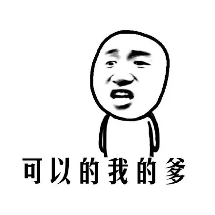

虽然我在更新日志里面写会周更，不过应该没多大可能真的周更，毕竟学生，不过我大概能尽量把平常生活啊学习啊方面的事放在这个网站上。
嗯大概。大概。
最近沉迷「梅雨明けの」这首歌，单曲循环地要吐了还是停不下来。
这个界面还是发发牢骚。至于杂七杂八板块真的还没想好要怎么做。有想法了而且有时间了再做吧。
2016.10.10
这个板块应该放一些简历啊生涯之类的东西，但鉴于我的人生阅历并不丰富，生涯也没什么好写，所以就暂时搁置吧。
毕竟我觉得这个板块并不重要。因为这个网站也是兴趣使然的，所以把重点部分做了做好了就行了。
或者这个板块也可以用来做一些比较私人的事，比如发布一些比较私人的消息。
所以我打算说接下来这件事：
老爸生日快乐！！

2016.10.5